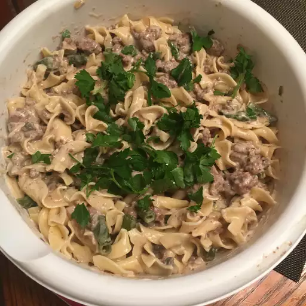

Beef Stroganoff (Taken from the "allrecipes" website)

A luxurious and creamy Russian dish
A cherished Russian classic that combines tender strips of beef with a rich, creamy sauce. This dish features
succulent beef cooked to perfection, complemented by sautéed mushrooms and a velvety sour cream sauce.
Ingredients
- 1 (8 ounce) package egg noodles
- 1 pound ground beef
- 1 (10.5 ounce) can fat-free condensed cream of mushroom soup
- 1 tablespoon garlic powder, or to taste
- ½ cup sour cream
- salt and ground black pepper to taste
Instructions
- Gather all ingredients.
- Sauté ground beef in a large skillet over medium heat until browned and crumbly; 5 to 10 minutes.
- Meanwhile, fill a large pot with lightly salted water and bring to a rapid boil. Cook egg noodles at a boil
until tender
yet firm to the bite, 7 to 9 minutes. Drain and set aside.
- Drain and discard any fat from the cooked beef. Stir condensed soup and garlic powder into the beef. Simmer
for 10
minutes, stirring occasionally.
- Remove beef from the heat. Add egg noodles and stir to combine. Stir in sour cream and season with salt and
pepper.
- Serve hot and enjoy!
Home